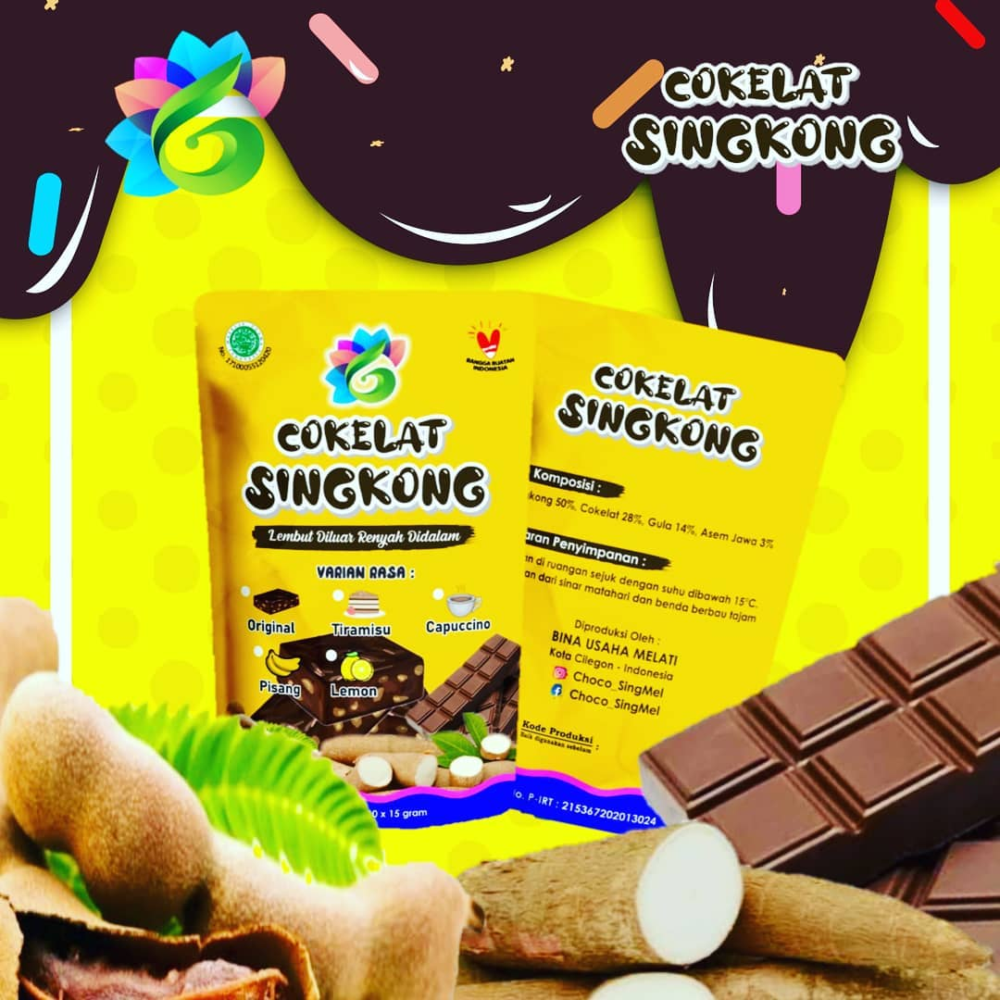
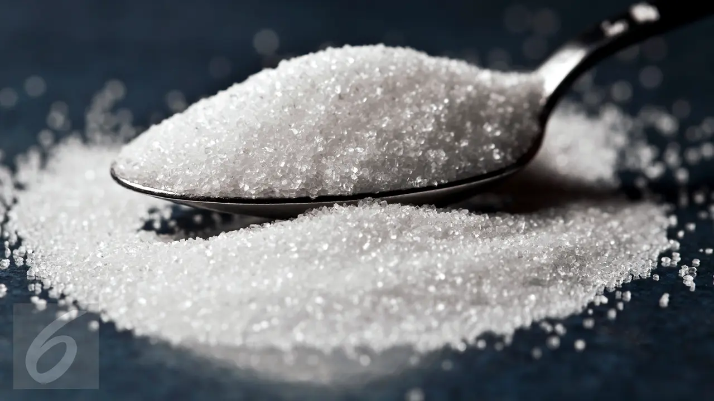
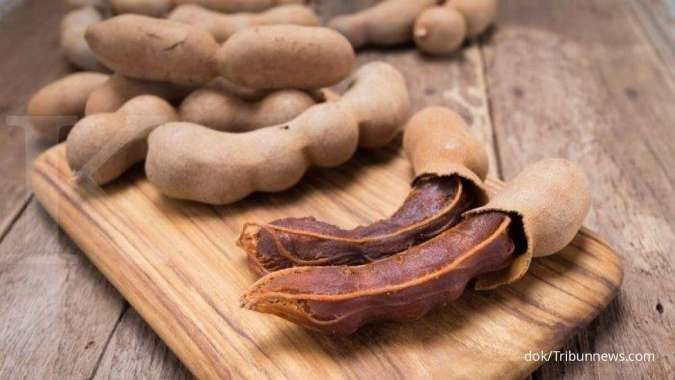
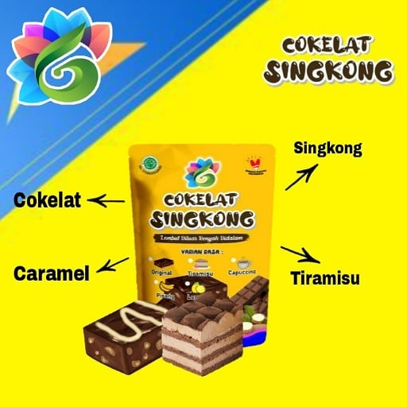
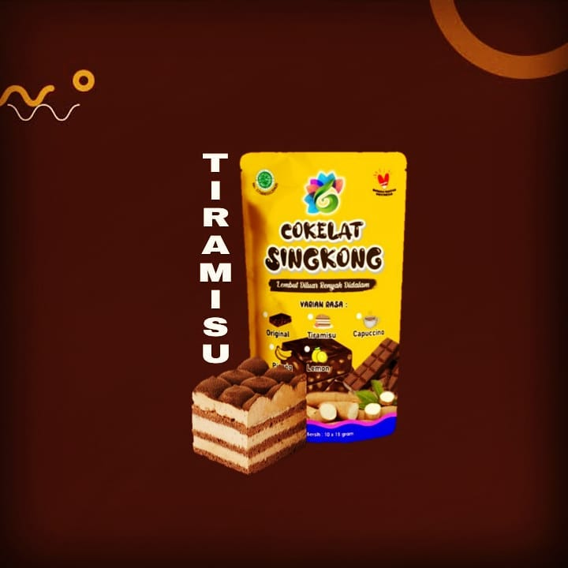

Ya kalau kalian laper,cara menanganinya dengan cara makan , Masa dengan tidur! Kecuali saat puasa ya .Rasa lapar adalah sinyal tubuh
Anda bahwa ada kebutuhan akan makanan.Makan adalah kebutuhan utama kehidupan dan sinyal lapar karena itu sangat berguna dan bahkan
diperlukan untuk kelangsungan hidup.
Tubuh kita membutuhkan sejumlah energi setiap hari ya karna kita tiak seperti patung yang tidak bergerak.
Kita mendapatkan energi ini dari makanan kita atau dari cadangan kita. Ketika simpanan energi dalam tubuh kita berkurang, kita menjadi lapar
karena tubuh kita ingin kita mencari makanan untuk mendapatkan energi
Alasan umum mengapa Anda (selalu) lapar :
Ya cara satu satunya adalah makan jika kamu laper maka kamu harus makan Tapi kamu bingung mau makan apa? Ya tentunya selain makanan
pokok kamu juga perlu yang nama nya cemilan
Manfaat Camilan
Bingung mau cemilan apa ? Yuk makan

Coklat dan singkong sangat bermanfaat loh
Cokelat Memiliki nutrisi yang dapat berdampak positif bagi kesehatan kamu.
Terbuat dari biji pohon kakao, cokelat adalah salah satu sumber
terbaik yang dapat kamu temukan.
Studi menunjukkan bahwa cokelat dapat meningkatkan kesehatan Anda dan menurunkan risiko penyakit jantung.
Manfaat coklat bagi kesehatan
Singkong adalah umbi-umbian kaya kalori yang mengandung banyak karbohidrat dan vitamin serta mineral utama.
Singkong merupakan sumber
vitamin C , riboflavin , dan niasin yang baik .Singkong mengandung pati resisten yang tinggi , sejenis pati yang melewati pencernaan dan memiliki
sifat yang mirip dengan serat larut
pati resisten memberi makan bakteri menguntungkan di usus Anda dan dapat membantu mengurangi peradangan
meningkatkan kesehatan pencernaan
pati resisten telah dipelajari karena kemampuannya untuk meningkatkan kesehatan metabolisme dan
mengurangi risiko obesitas dan diabete
Singkong juga mengandung vitamin C dosis tinggi, dengan 20% DV dalam setiap porsi 3,5 ons (100 gram)
Vitamin C memainkan peran kunci dalam
banyak aspek kesehatan, termasuk kekebalan. Apalagi sekarang lagi masa pandemi jadi singkong berperan penting dalam kekebalan tubuh kita
Kenapa harus coklat singkong ? Ya karna coklat singkong adalah cemilan yang enak dan sehat tanpa bahan berbahaya seperti pengawet dan
nya. jadi tidak perlu lagi kamu takut dengan cemilan tidak sehat karna coklat singkong
sudah mempunyai izin P-IRT dari dinas kesehatan,
tidak usah di ragukan lagi
selain sehat Coklat Singkong juga sudah terbukti ke halalanya karna sudah mendapatkan sertifikat dari MUI
Ya karna menggunakan bahan bahan alami dan organik seperti coklat, singkong pilihan, gula murni dan asam jawa. tidak menggunakan zat berbahaya
 
Coklat singkong bukan hanya rasa coklat doang loh ada juga rasa tiramisu 🍰 Yang pastinya enak banget cocok banget kalau dimakan saat gabut
 #makanan#makanannak#cemilansehat#cemilanenak#coklat#singkong#manfaatcokelat#manfaatcoklat#singkong#manfaatsingkong